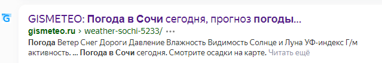

ГЛАВА 5 «Поиск информации в интернете»
Как начать поиск
Строка поиска располагается, как правило, в центре экрана. Над ней или под ней — дополнительные разделы, позволяющие нам сузить область поиска, выбрав соответствующие темы:
карты, новости, словари. Кроме того, на поисковом сайте могут быть отдельно размещены ссылки на новости, на информацию о пробках, погоде, телепрограмму.
В строке поиска наберите слово, обозначающее, что вы ищете. Например, «Погода в Сочи» Компьютер при написании вами запроса также будет выдавать подсказки.
Это запросы, которые часто задают другие пользователи. Если какой-то из этих запросов вам подходит, вы можете сразу его выбрать.
В ответ на ваш запрос поисковая система отобразит список сайтов, оторые могут содержать нужную вам информацию. Список может быть большим, на десятки, иногда сотни страниц – все зависит от запроса.
Для каждой интернет-страницы будет указан ее заголовок, краткая выдержка из текста данной страницы и ссылка на саму страницу, то есть ее адрес в интернете.

Если какой-то из предложенных результатов заинтересовал, следует нажать один раз на заголовок этого результата – и страница откроется целиком в отдельном окне.
По некоторым запросам поисковая система может сразу предоставить не только ссылки на другие страницы, но и нужную информацию.
Если на первой странице вы не нашли нужную информацию, есть возможность перейти на следующую. Для этого необходимо кликнуть на слово «Дальше» или на любую цифру внизу страницы.
Поиск изображений и фотографий
Кликните на раздел «Картинки». Введите в строке поиска запрос, например, «Дачный домик». Нажмите Enter или кнопку «Найти».
Сохранение на компьютер изображения или фотографии из интернета
1. Выберите нужное изображение. Кликните по нему правой кнопкой мыши один раз.
2. Выберите «Сохранить изображение как»
3. В открывшемся окне выберите место для сохранения файла, здесьже можно указать его имя.
4. Нажмите кнопку «Сохранить»